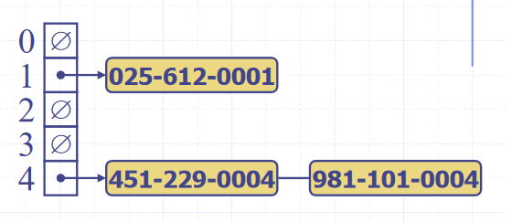

Maps (ADT)
- “Searchable collection of key-value entries” (Data Structures and Algorithms in Java, Goodrich, Tamassia, Goldwasser)
- Duplicate keys cannot exist
- Fundamental operations
- contains(e), get(e), put(e), remove(e), size(), isEmpty() sometimes additional operations for getting lists of all keys or all values
- Two concrete implementations
- List based implementation
- \(O(n)\) lookup and insertion (need to check for duplicates) time
- \(O(n)\) space complexity
- Hash table based implementation
- \(O(1)\) lookup and insertion time
- \(O(k \cdot n)\) space complexity (still linear with number of items, but larger by a big constant factor)
Hash tables (Concrete implementation)
- Time efficient implementation of the Map abstract data type
- To look up keys in \(O(1)\) time, we want essentially want to be able to index an array of them, but the space of keys are far too large to conceivably keep one element in the array for each key
- Hash functions
- We use a “hash function” to reduce the size of the keyspace, so we can used the hashed outputs of keys for indices in the array storing the map
- A hash function \(h : keys \rightarrow indices\) maps keys of a given type to integers in a fixed interval \([0, N-1]\) where \(N\) is the size of the array to store the items in
- Modern implementations of hash functions are very complicated, and often involve two phases, first mapping keys to integers, then reducing the range of those integers, but simpler ones exist, for example \(h(x) = x\ MOD\ N\)
- We try to pick \(N\) such that there are fewer collisions - numbers with few factors are better
- Collisions are when two different keys are mapped to the same index by the hash function. Since we cannot store duplicate keys unambiguously in a map, we need a protocol to resolve this. Common approaches are
- Separate chaining
- Each index in the array can contain a reference to a linked list. Whenever a key is mapped to that index, the key-value pair is added to the linked-list. If there are duplicates, we iterate over the chain till we find the key, or reach the end

Image source: Data Structures and Algorithms in Java, Goodrich, Tamassia, Goldwasser
- This has the drawback of requiring additional memory space for each linked list
- Linear probing
- When colliding items are placed in different cells in the table, it is called “open addressing”
- Linear probing handles collisions by placing the colliding item in the next available table cell, wrapping around if necessary
- As with the linked list, searching is done by iterating over the next cells, stopping when the item is found, or an empty cell in the table is reached
- This has the drawback of colliding items “lumping together”, which can cause many items needed to be iterated over in a probe
- To remove an item, we cannot just set it to null again, as that would mean it stops probing, even though there might be subsequent elements. Instead, we replace it with a “DEFUNCT” element, which is just skipped over when probing
- Double hashing
- When a collision occurs, the key is re-hashed with a new hash function
- Sometimes \([h(k) + i \cdot f(k)]\ MOD\ N\) where \(h\) and \(f\) are hashing functions, and \(i \in \mathbb{Z}\) is used
- As before, there are many implementations of the hash function, but \(f(k)= q-k\ MOD\ q \quad \| \quad q<N, q \in primes\)
- Searching is similar to linear probing, but when iterating we look at the hash value for each \(i\), rather than just the next index in the table
- This helps avoid the issue of colliding items “lumping together” as in linear probing
- Resizing a hash table
- As with arrays, we create a new table of a larger size, then iterate over every index in the table, and apply the standard add operation to add it to the new one (re-hashing)
- Performance of hash tables
- The load factor of a hash table is the ratio of the number of items it contains to the capacity of the array \(\alpha = \frac{n}{N}\)
- If this approaches \(1\), the table becomes inefficient, so we often re-size the table whenever it exceeds a certain value, e.g. \(0.75\)
- Time complexity of insertion/lookup
- \(\Theta(1)\) best case
- \(O(n)\) worst case
- “Expected” number of probes with open addressing is \(\frac{1}{1-\alpha}\)
- In practice, hash tables are a very efficient implementation of maps assuming the load factor is not very close to \(1\)
Sets (ADT)
- “A set is an unordered collection of elements, without duplicates that typically supports efficient membership tests” Data Structures and Algorithms in Java, Goodrich, Tamassia, Goldwasser
- Fundamental operations
- add(e), remove(e), contains(e), size(e), isEmpty(e)
- Set operations
- union(s1, s2), intersection(s1, s2), difference(s1, s2)
- Two concrete implementations
- Can be implemented with a linked list (for efficient resizing, and needn’t be indexable) storing the elements
- Need to iterate over each element in the list to lookup items, \(O(n)\) time complexity
- Fairly small space complexity
- Can be implemented like a hash-table, but using only keys, not key-value pairs, in “hash-sets”
- Fast \(O(1)\) lookups
- Large space complexity